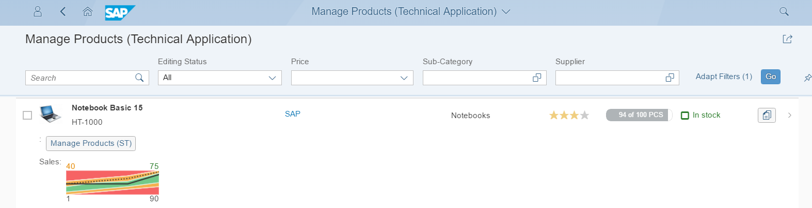
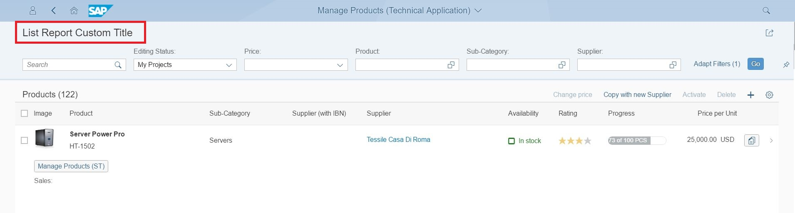

To make things easier, you may want to create an app without variant management. In this
case, only the title of the app is displayed. You can create a custom title, if
required.
Context
Without variant management, and with no custom title added, your app looks as
follows:

App Without Variant Management
Without variant management and with a custom title added, your app looks like
this:
App Without Variant Management and With Custom Title

Procedure
-
Include the variantManagementHidden flag in the settings of the list
report component in the manifest.json of your app.
- If you set the flag to true, then standard variant management is not
available in the app. The app name is displayed instead.
- If you set the flag to false or if the flag is not at all contained in
the manifest of the app, the standard variant management is available and
can be enabled or disabled. For more information, see Enabling Variant Management.
Sample Code List Report Without Variant
Management
"sap.ui.generic.app": {
"_version":"1.1.0",
"pages": [
{
"entitySet": "XXXXXX_Product",
"component": {
"name": "sap.suite.ui.generic.template.ListReport",
"list": true,
"settings" : {
"gridTable" : false,
"multiSelect": false,
"smartVariantManagement": true,
"variantManagementHidden": true // Hides Variant management
}
},
-
If you want to use an app-specific title instead of the variant, include the
subTitleIfVariantMgmtHidden property in the i18n file and
enter a text value as shown below:
Sample Code
#XTIT,40
subSubTitleIfVariantMgmtHidden = List Report Custom Title
-
Add a new property in the manifest.json of the application as shown below.
"sap.ui.generic.app": {
"_version":"1.1.0",
"pages": [
{
"entitySet": "XXXXXX_Product",
"component": {
"name": "sap.suite.ui.generic.template.ListReport",
"list": true,
"settings" : {
"gridTable" : false,
"multiSelect": false,
"smartVariantManagement": true,
"variantManagementHidden": true,
"subTitleIfVariantMgmtHidden": "{{subTitleIfVariantMgmtHidden}}" // Adding Custom Title here
}
},